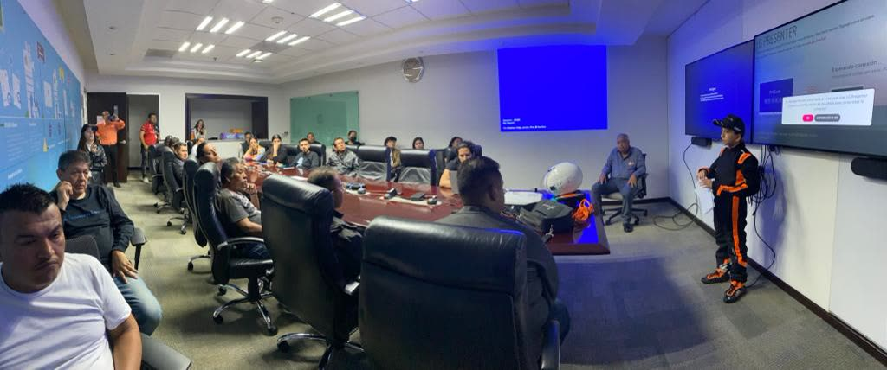
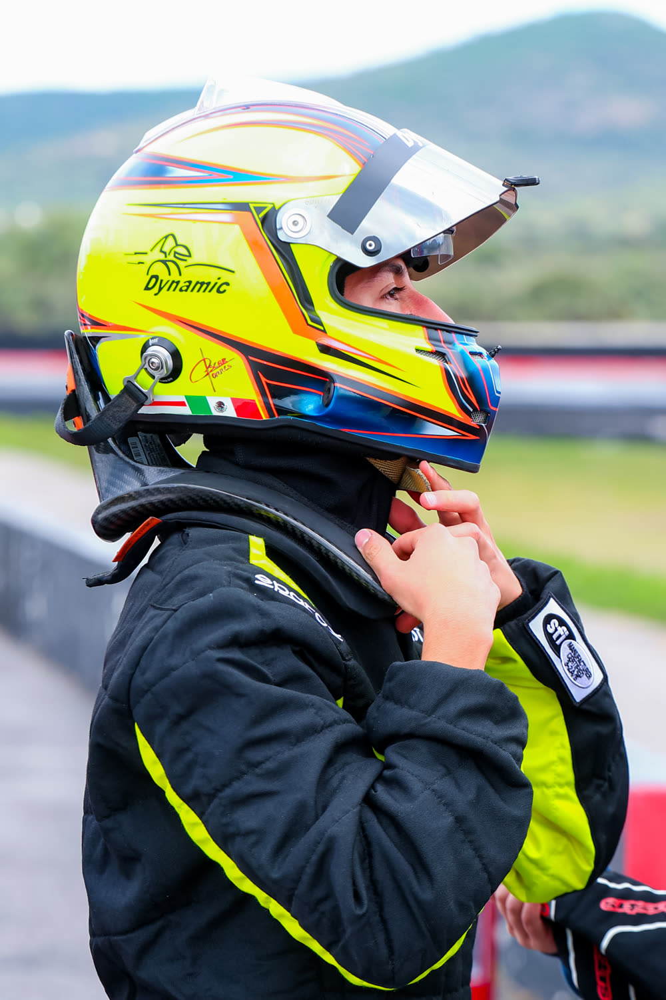
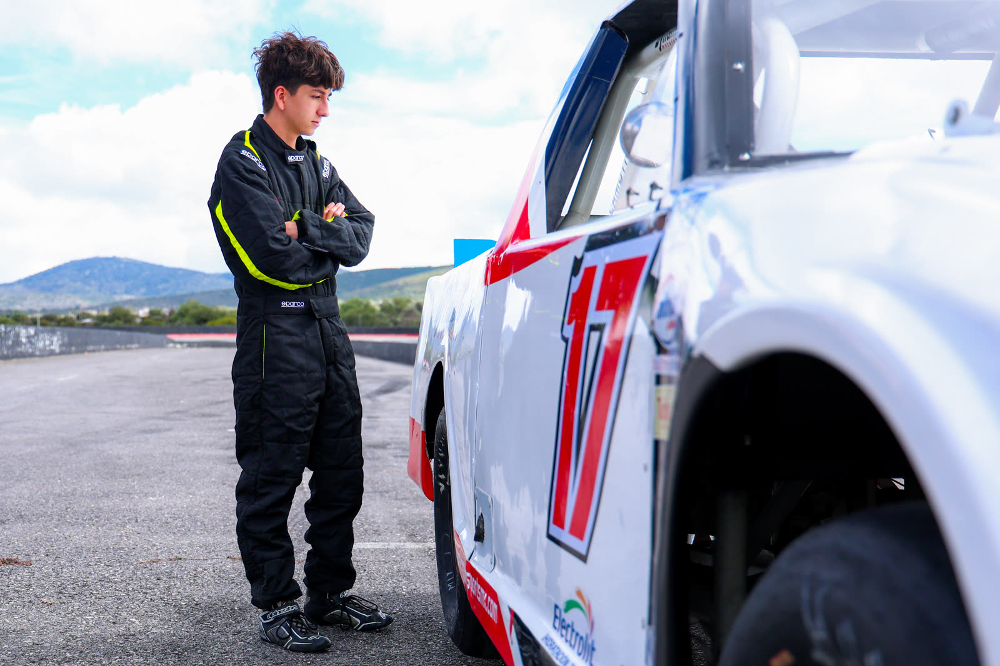
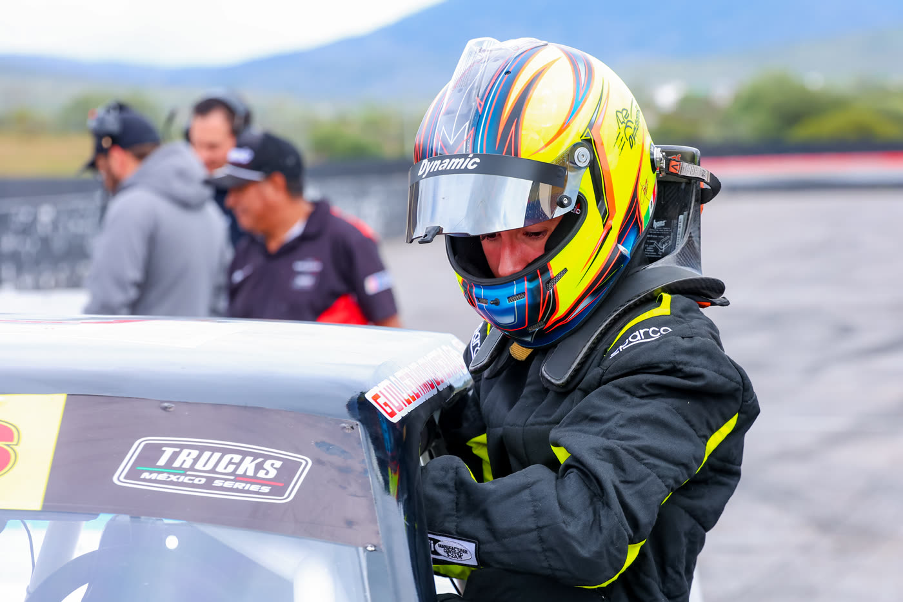
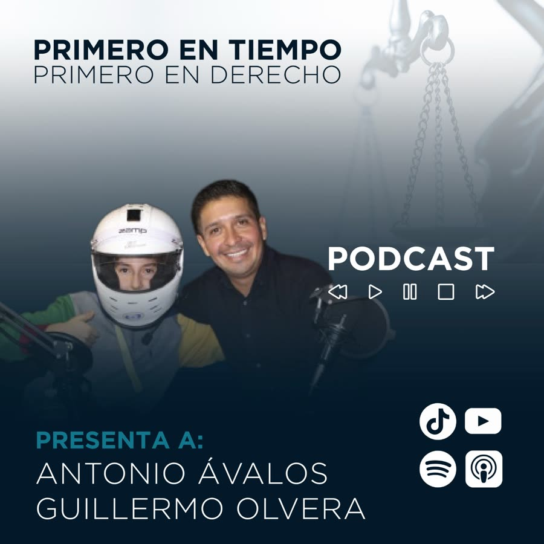
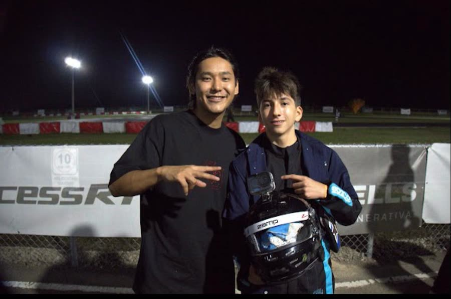
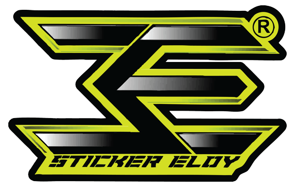
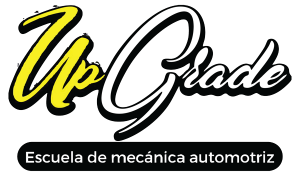
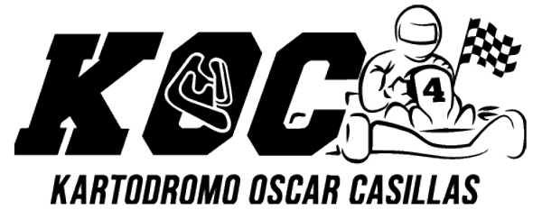
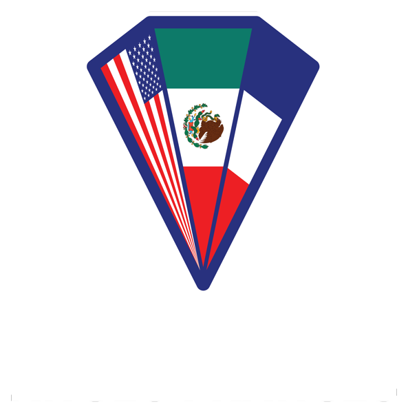

Conferencia
Plática en HP
Trabajo en equipo y toma de decisiones: lo que el karting enseña a las empresas.
Guillermo Olvera · Piloto #717 · Guadalajara
15 años, kart X30 Jr. y un salto a Trucks México Series. Disciplina, resiliencia y hambre de triunfo en cada curva.
Reels · Arrastra el carrusel
—
—
Logros deportivos

Sobre mí
Tengo 15 años y soy piloto de karting con experiencia en competencias de alto nivel. He corrido en Fórmula Mundial Jr., donde destaqué, y hoy sigo mi desarrollo como piloto activo de X30 Jr.
Terminé la secundaria en el Instituto Anglo Francés y obtuve la beca de excelencia académica Magis para la preparatoria del ITESO. Fortalezco mi conocimiento automotriz en Up Grade Institute.
“En 2023 me fracturé tibia y peroné. Regresé en 2024 y al mes gané el Time Attack.”
Una nueva etapa
Con el respaldo de Dynamic Motorsports, escudería con más de 50 victorias en Trucks México Series y NASCAR México Series, Memo da el salto del kart a la camioneta #17.
Datos de la serie Trucks México Series.


Fuera de la pista

Trabajo en equipo y toma de decisiones: lo que el karting enseña a las empresas.

Con Antonio Ávalos: “¿De los pequeños también se aprende?”.
Invitado en dos ocasiones para hablar de su carrera y motivar a creer en el propio camino.
Su trayectoria y lo que pasa más allá de la pista.

Experiencias en pista con creadores de contenido automotriz.
Patrocinio
Tu marca en el kart, la camioneta, el uniforme, el casco y la zona de pits.
Stands, souvenirs y simuladores de carreras con tu marca en tus sucursales (previa cotización).
Pláticas para tu equipo sobre trabajo en equipo y toma de decisiones, como la impartida en HP.
Menciones en redes, reels y colaboraciones con creadores de contenido automotriz.
Patrocinadores actuales




Contacto
Cuéntanos de tu marca y armamos una propuesta a la medida para la temporada.
WhatsApp de Guillermo Olvera Mendoza, papá del piloto.